（1）Google 快捷登录申请及配置教程：
- 在Google后台中配置
- ）申请个google开发者账号（略过）
- ）登录Google后台： https://console.cloud.google.com/apis/
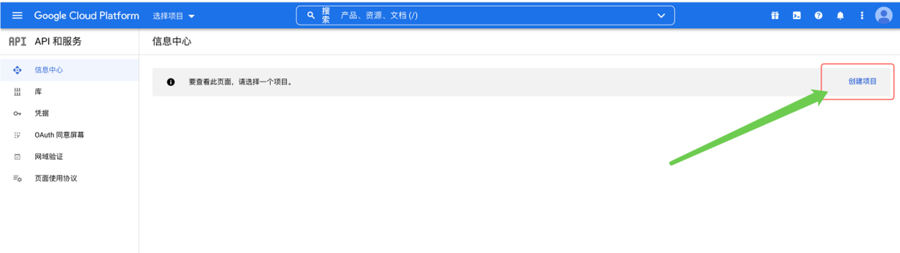
- ）创建个项目 （项目名称随便填，只要不报错就行）
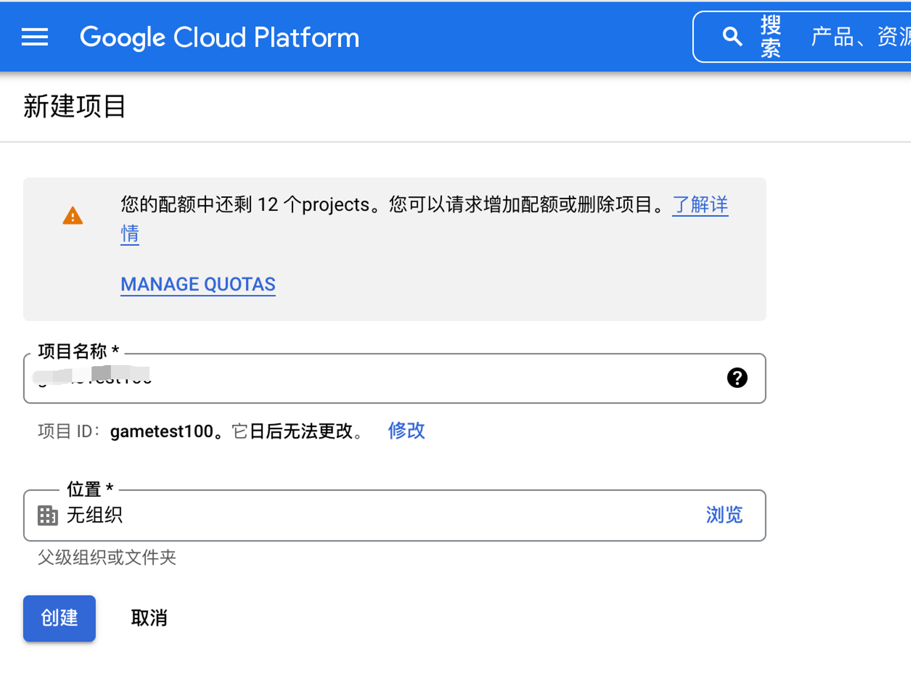
- ）OAuth权限请求页面
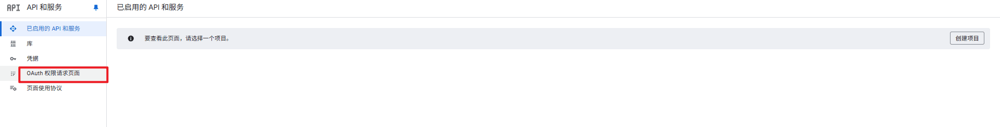
跳转到概览
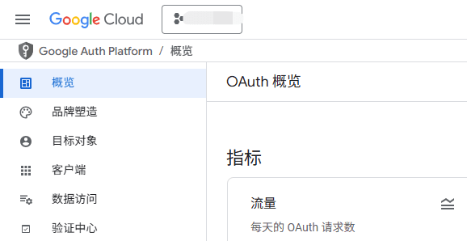
点击客户端创建应用分别创建web，安卓，ios
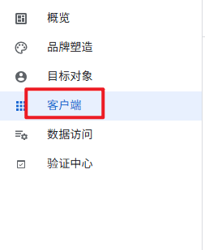
web：注意www和不带www都要分别添加

查看ID和key
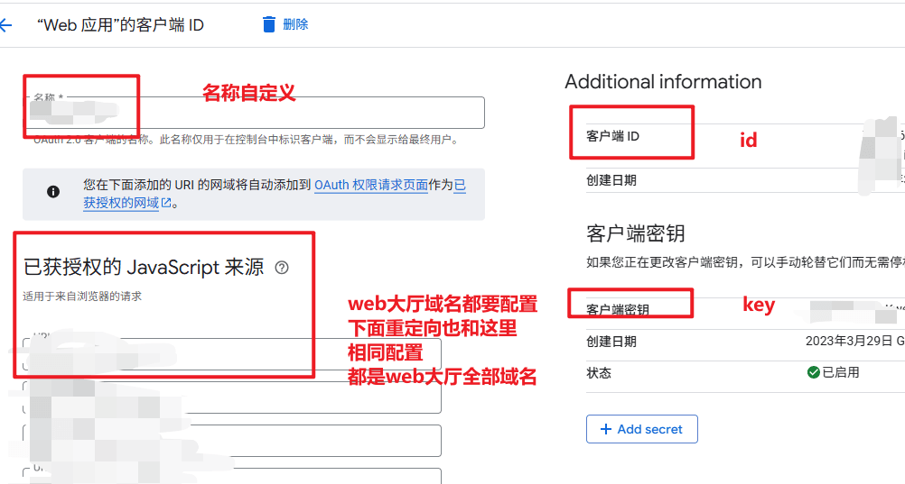
Android：
按照同样的方式创建Android应用，注意不同的包，包名并不相同，请依据APP配置中的包名填写
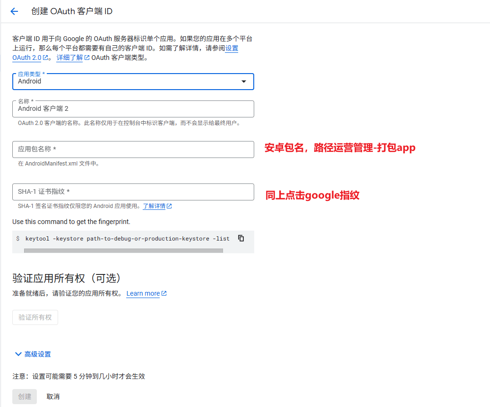
指纹证书，查看路径为：打包app -安卓 查看当前的证书指纹，然后点击创建。

E.）同样的方式创建ios包，注意不同的包，包名并不相同，请依据打包app包名填写。
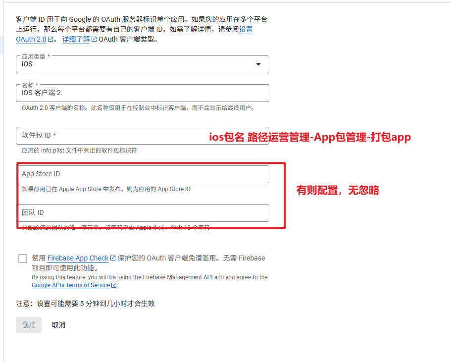
F.）Google后台的数据填写完成，接下来将Google的信息填写到后台，先填写h5的appID和secret，绿色的填绿色的，红色的填红色的地方
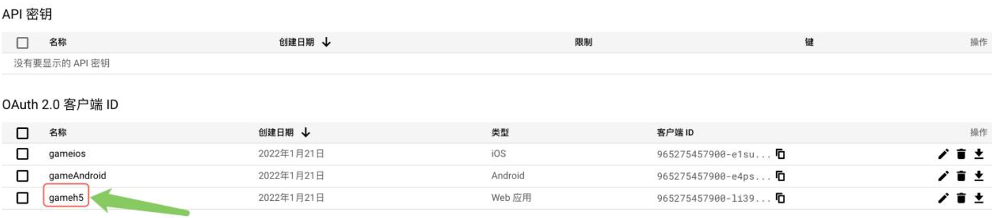
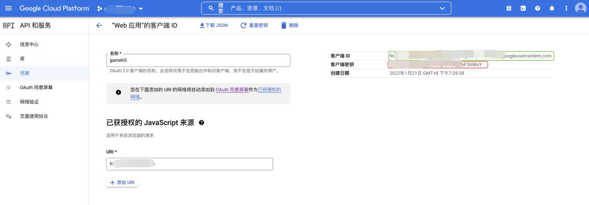
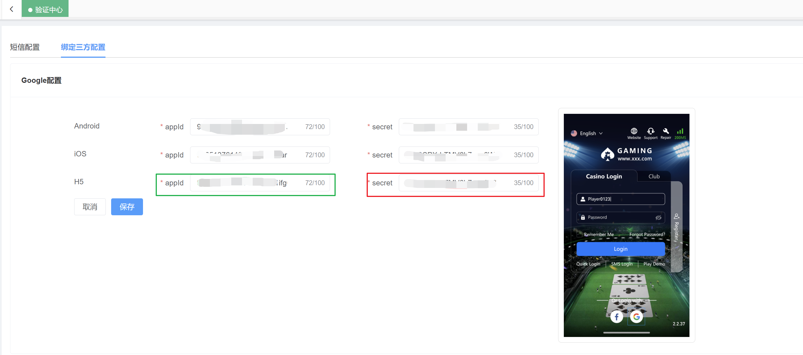
G.）Android的appId和secret都填写h5的appid 即 android appid=android secret=web/H5的appid
H.）ios的appId和secret，游戏后台ios的appid和secret分别对应是google后台中的“客户端ID”和“iOS网址架构”
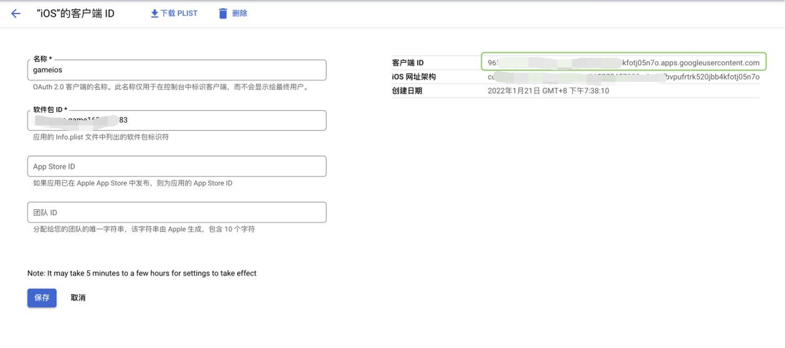
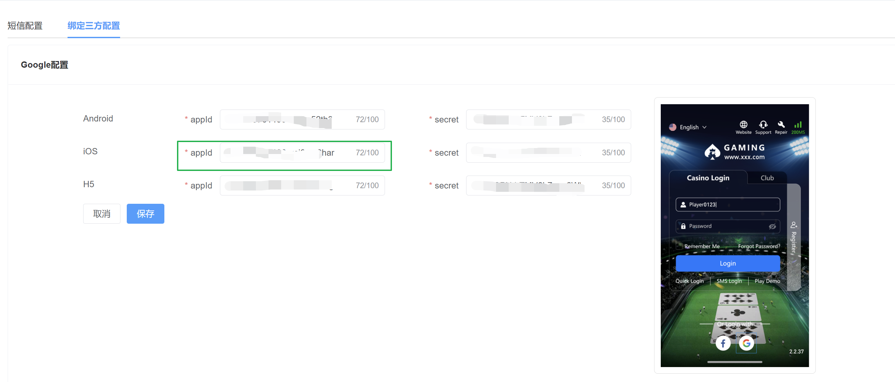
最后Google后台设置完成后请留意发布应用，运营后台 保存后留意更新ios和Android包就OK了，h5不用更新。